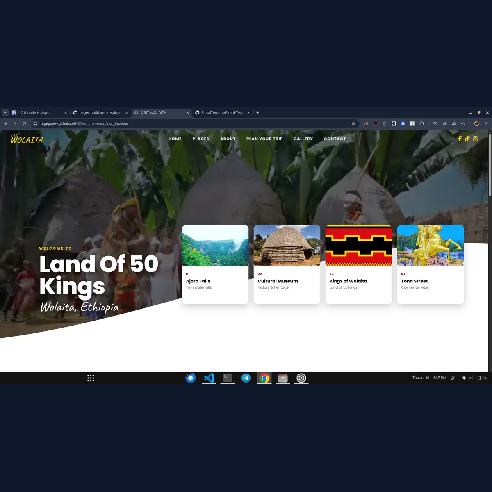

GENERATIVE AI • CULTURAL TOURISM • PYTHON FLASK
Visit Wolaita & AI Virtual Cultural Try-On
An interactive cultural tourism portal for Wolaita Zone, Southern Ethiopia, pairing destination galleries with an AI-powered virtual try-on system for traditional Wolaytta attire.
/api/tryon)

1. The Vision: Cultural Heritage Meets Applied AI
Wolaita Zone possesses a vibrant history, breathtaking landscapes (Mount Damota, Ajora Falls), and distinctive traditional handwoven textiles characterized by bold yellow, red, and black patterns. However, digital representation of Wolaita's cultural assets has historically been sparse online.
Visit Wolaita was created to provide a modern, interactive digital window into Wolaita culture. Going beyond static tourism brochure sites, the platform integrates an innovative AI Virtual Try-On feature that allows global visitors and diaspora members to upload their personal portraits and realistically envision themselves adorned in authentic Wolaytta traditional attire.
2. Architecture & Virtual Try-On Pipeline
The backend application is structured in Python using Flask with WSGI compatibility for production deployment:
AI Try-On Execution Pipeline:
User Photo Upload → Garment ID Selection → Rate Limiter Check → Generative Try-On Inference → Local Asset Caching → Interactive Result View
- Rate-Controlled API (
POST /api/tryon): To prevent abuse of resource-intensive generative models, the endpoint enforces a strict rate limit of two requests per hour per client IP usingFlask-Limiter. - Automated Asset Pipeline: Upon successful generation, the service downloads the high-resolution output into a persistent
generated_images/storage directory and serves normalizedimageUrlanddownloadUrlpaths. - Production WSGI Architecture: Ready for Passenger WSGI engines via
passenger_wsgi.py, enabling seamless hosting on standard Linux environments.
3. Technical Challenges & Solutions
Challenge A: Managing Resource-Heavy Image Inference
Generative computer vision models require significant processing time and network bandwidth, risking server timeout during client requests.
Solution:
Structured the client-side interface with interactive state indicators and optimistic progress feedback, while the backend utilizes asynchronous request pooling and automatic image persistence to ensure reliable delivery even on slow mobile connections.
Challenge B: Abuse Prevention on Shared Hosting
Public generative AI endpoints are frequent targets for automated bots that can rapidly deplete API quotas.
Solution:
Implemented IP-based sliding window rate limits via Flask-Limiter, paired with payload structure validation that rejects invalid image strings before reaching the AI model tier.